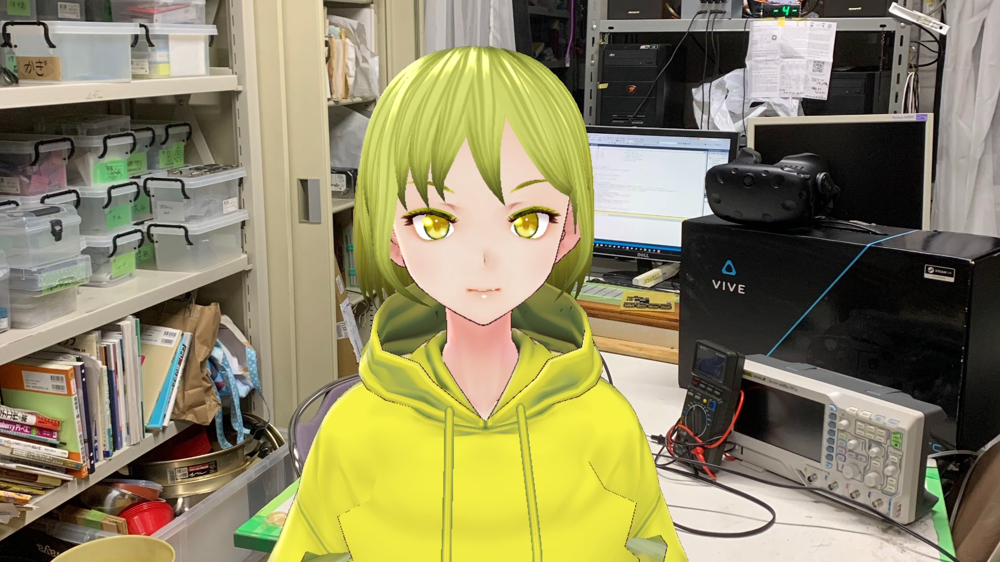
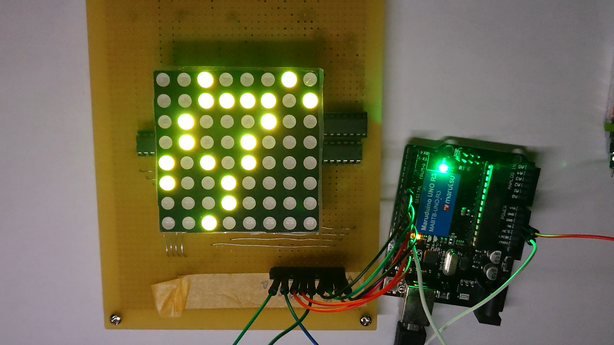
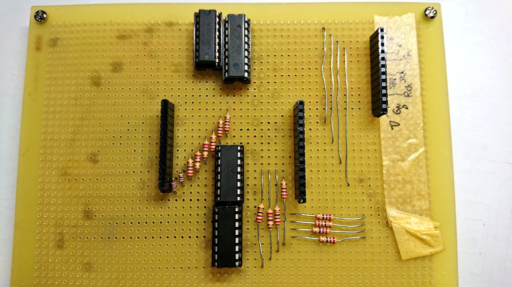
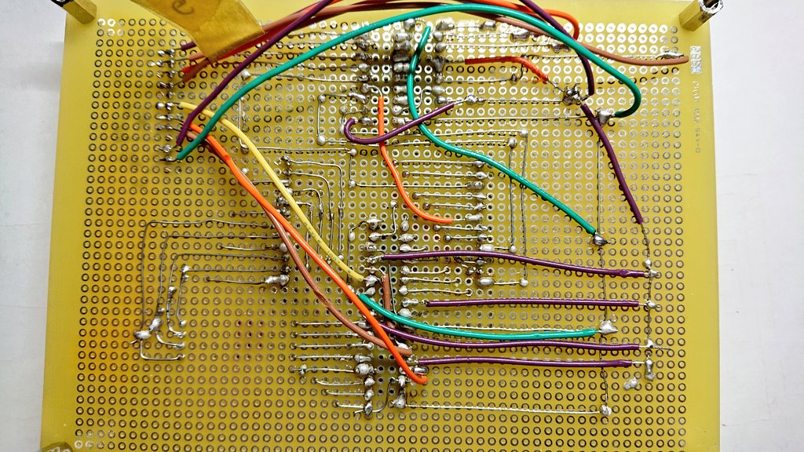
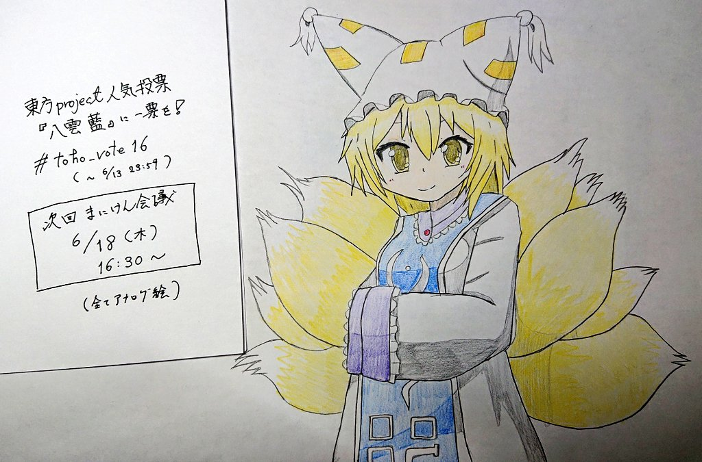

Lunatic電通生もっちゃんの部屋
工学研究部に入るには（＋まにけん、でんまるの紹介も！）
こちらの記事は、工研新歓ブログリレー2022の6日目（4月6日）です。
5日目の記事は、ごっちさんの undefine の記事です。螳溘?縲∬ｨ倅ｺ倶ｽ懈?譎ゅ↓縺ｯ4譌･逶ｮ繧?譌･逶ｮ繧ゅ〒縺阪※縺翫ｉ縺壹?√Μ繧ｹ繝医′菴懈?縺輔ｌ縺ｦ縺?∪縺帙ｓ縲ゅ＃繧√ｓ縺ｪ縺輔＞縲
7日目の記事は、淵野アタリさんのあらゆる努力は実らない です。CSSが暴れまくっていて閲覧しにくいです。体調が悪い人は閲覧することを控えてください。（自分でcss無効にする方法とか検索して探してからみてね。Hint：F12 -> Elements -> head -> css -> 右クリック -> delete）
はじめに
さて、今までの方に比べてHPの見た目が悲しいことになっていますが、電通大生にはHPの分野が苦手な人もいますので、HPのデザインなどが苦手な方もご安心ください。
今回は、まとも記事枠＋新学期初日ということなので、「工学研究部の紹介」を、さらに4/9の記事では「電気通信大学で生き残るための序盤の布石」を紹介したいと思います。ただし、後者の布石については、筆者の主観が入っていますのでご注意ください。（昨年度まで１年生の履修相談のサポートボランティアを行っていたので、ある程度客観的に話せると思います。）
ところでおまえは誰？
金髪美少女らしい
- uec19（1浪）
- 前期入学・Ⅰ類メディア情報学プログラム
- 現在学域4年（某研究室に所属）
- 1年次はすべて対面授業、2年次以降はコロナ禍によるオンライン授業を経験
- 工学研究部、漫画・アニメーション研究会、東方Project同好会 電々。通信の３サークル所属
1. 工学研究部に入るには？（工学研究部紹介）
工学研究部（公式HP）（新歓2022特設HP）とは、ものつくりを行っている技術系サークルです！おわり！！
と終わらせるのは申し訳ないので、詳しい説明をします。
工学研究部（略称：工研）とは、ハードウェアやソフトウェアなどの「ものつくり」を行っているサークルです。具体的には、
機械工作（ボール盤、フライス盤、バンドソーetc）
電子工作（マイコン、Arduino etc）
プログラミング（C, Python, Ruby etc）
IoT（Internet of Things）
Webアプリ（JavaScript, next.js）
ネットワーク・サーバー（物理・仮想）
手芸・裁縫（ミシンあり！）
料理（うどんetc）
女装・男装・コスプレ（？）
など、「工学」とつけられそうならなんでもOK！（あれ、最後のほうあってる？？？）
ちなみに、かくいう筆者も「魔理沙コス」をしています。新歓期にも…？？？
いろいろな作品等をつくっています。詳しくは新歓2022特設HPを参照していただきたいのですが、その中で、自分は「電光掲示板」を作成しました。

こちらの作品は１年生の夏休みに行われた「工研コンテスト」に向けて作成した作品です。私は、大学にはいってからハードウェアやソフトウェアを触りました。そのため、なんもわからねえええみたいな状態で作成していました。しかし、ありがたいことに、先輩がたに優しくご指導をしていただいた結果、完成させることができました。以下は、配線によるはんだ地獄の例です。


いやあ、おそろしいｗ。
工学研究部では、このように、技術について「なんもやったことない！！！！」という人も大歓迎です！前期には新入生講習といって、電通大の授業で扱うことになる「Ruby言語」「C言語」を教えます。また、ハードウェア講習として、LEDやトランジスタの使い方や回路の組み方について学ぶことができます！そのため、初心者大歓迎！となっています。
さらに、サークル棟２階にある工研部室には、さまざまな加工機や3Dプリンター、電子部品がおかれています。そのため、部員になれば自由に使い放題！さらに、先輩や同級生などの交流もできますので、サークル活動だけでなく、大学生活も上手くいくこと間違いなし！？（個人差があります）
詳細情報は、4月10日の新歓オリエンテーションや、工研Twitter@ueckokenを参考に、あそびに来てください！！！ここでは、簡単にいくつか箇条書きで説明します。これらについての内容も質問してください！（Twitterでも大丈夫です！）
工研部会（全体会議）：毎週金曜日18時～19時（この時間よりあとの時間はあけておくとさらに楽しめます！）
部室は毎日8時～22時（一部例外あり）
大学施設（ものつくりセンター etc）が使えるため、基板加工機やレーザーカッターもつかえる！
部費は学域１年生は半年5000円（ちょっと高い？）
ただし、部品購入代等に最大5000円までの半額補助あり。また、部の予算を使うことも可能！
毎年3~4回、工研部報（部員の作品集）を作成
工研部報を「技術書典」（技術系コミケみたいな）に出品！
その他、さまざまな利点あり！！！！
ぜひあそびにきてください！
2. 漫画・アニメーション研究会、東方Project同好会 電々。通信のお知らせ
おい、工学研究部のイベントなのに、他のサークルについての記事を書くな！と言われそうですが、いいでしょ。
まず、漫画・アニメーション研究会（略称：まにけん）は、漫画・アニメ・イラストを作成するサークルです。会員で作成した漫画やアニメを作成し、それを新歓や調布祭、コミックマーケットに頒布します。イラストについても同様です。部室はサークル棟２階（工研とちかい！）にありますので、活動場所もあります。さまざまな機材がありますので、絵を描いたことない人でも安心して創作活動ができます。また、絵が下手でも…ともじもじする必要はありません！絵うまくても下手でも、大切なのは、作品をつくろうとするハートです！（大げさではなくマジで）。そのため、少しでも絵を描くのに興味のある方は、あそびにきてください！@den2mani

次に、東方Project同好会 電々。通信（略称：でんまる）は、東方Projectを愛している人のためのコミュニティサークルです。実は創設４年目なので、まだまだ若造のサークルです。このサークルでは、東方について語ったり、原作でバトルをしたり、二次創作を楽しんだり、絵や音楽の創作をしたりなど、さまざまな活動を行っています。部報をつくったり、調布祭では非想天則大会と幻走スカイドリフト大会なども行っているため、かなりアクティブなサークルであるといえます。

画像は、創部1年目の2019年の調布祭の「第１回東方非想天則大会」の写真です。なぜか妖夢全一の方もきたりして「なぜ？？？」となっています。こちらのページでは簡単に語ることはできないので、こちらも、興味のある方はあそびにきてください！！！@uec_Touhou_
おわりに
ここまで読んでいただきありがとうございました。ざっくり、サークルの紹介を行いましたが、雰囲気は掴めましたでしょうか。サークルの質問や、大学の質問など、ちょっと古いかもしれませんが、なにか気になる方がいましたら、お気軽にTwitterにクソリプを飛ばしてください！@sakuramochi0708 おまちしています！！
さて、9日には、前期入学からメディアに入ったお話や、１年生前期、後期のモチベについて、3年前という少し古い情報ですが、記述できたらなと思います。工研新歓ブログリレー2022の9日目をお待ちください。
それでは、工研、まにけん、でんまるであなたとお話できることを楽しみにしています。